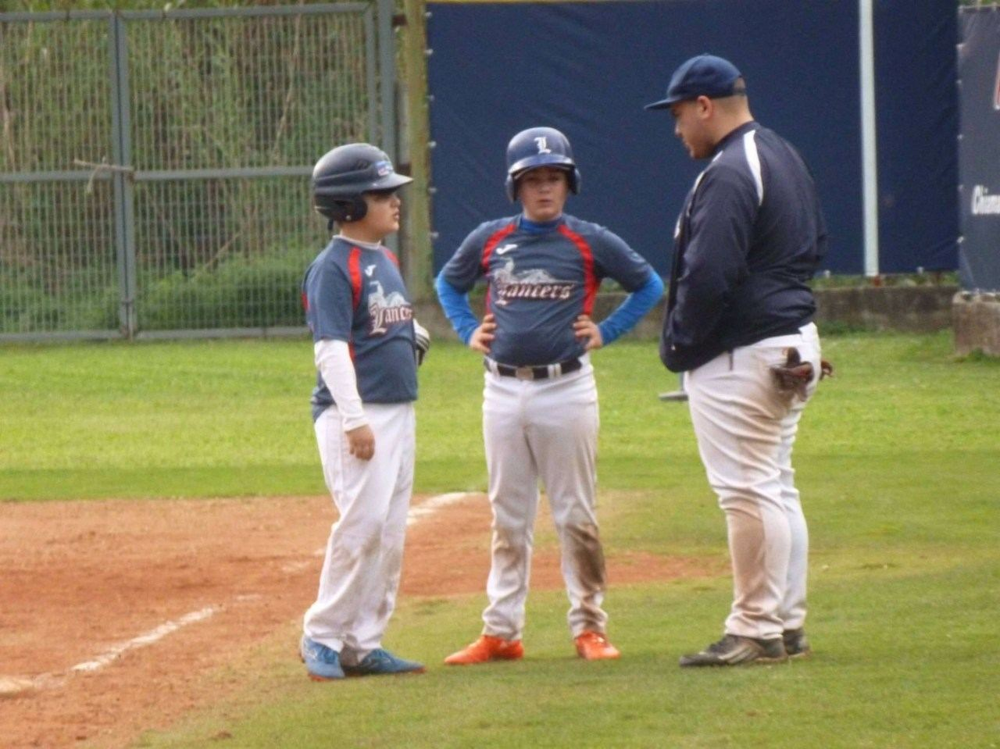

In tutto si contano solo sei battute valide che fruttano la prima base (2 Lopez e Signorini, una ciascuna Paoli e Scarpulla) e altre due che però non producono la promozione in base del battitore (Paoli e Pellegrini). Ma andiamo con ordine.Questa la formazione scesa in campo: Lorenzo Gianrossi, Tommaso Lenzerini, Alberto Lopez, Paolo Manetti, Silvia Onori, Gabriele Paoli, Alessio Pellegrini, Lorenzo Sarubbi, Lorenzo Scarpulla, Alfredo Signorini, Noemi Vecchi.
Primo inning, 3-0. Buona partenza dei ragazzi di Lastra a Signa, ma sarà solo un fuoco di paglia. Per la fase difensiva si presenta sul monte di lancio Lopez, ricevitore Pellegrini. Un Lopez in forma smagliante elimina due battitori, cui si aggiunge un out di Signorini in seconda base: zero punti per il team fiorentino. In attacco Lopez e Signorini battono validamente mentre Paoli, Pellegrini e Scarpulla vengono promossi in prima base con 4 balls del lanciatore. Di questi Lopez, Paoli e Pellegrini vanno a punto.
Secondo inning 0-1. Lanciatore Lopez, ricevitore Pellegrini. Lopez riprende una battuta del n° 12 avversario ed è lesto a mandare la pallina in prima base: eliminato. Anche Manetti riesce a eliminare un battitore avversario prendendo la palla al volo. Gli avversari realizzano un punto con il n° 5 dopo una ricezione imperfetta. In attacco Lopez viene colpito e quindi è promosso in base. Con Manetti sul piatto di battuta la pioggia, che già da qualche minuto stava cadendo, si intensifica e l’arbitro decide per la sospensione. Mezz’ora dopo si riprende a giocare ma con un nulla di fatto per i nostri colori.
Terzo inning 0-0. Frazione velocissima. Lanciatore Lopez, ricevitore Pellegrini. Lopez riprende altre due battute, poi Signorini raccoglie la terza battuta valida del Junior Firenze e lancia la pallina in prima base: 3 eliminati e cambio. Tre dei nostri vengono eliminati per 3 strikes senza raggiungere la prima base: zero punti e fine inning.
Quarto inning 1-4. È l’inning decisivo, quello del sorpasso. Lanciatore Pellegrini, ricevitore Scarpulla. Pellegrini non è molto efficace e manda 3 battitori avversari in prima base per 4 balls. Con tutte le basi piena la situazione è difficilmente gestibile e i nostri avversari segnano con i numeri 26, 5, 34 e 20. Da segnalare una bella eliminazione quasi su casa base effettuata dal duo Paoli- Scarpulla. Lopez batte forte sulla destra e va in prima base. Con la battuta successiva riesce a sfruttare un errore del loro terza base e, rubando ben tre basi, va a segno. Purtroppo i due successivi battitori, Paoli e Pellegrini, sono bravi a battere validamente ma sfortunati a non arrivare in prima base con due azioni in fotocopia.
Quinto inning 1-1. Lanciatore Paoli, ricevitore Scarpulla. Paoli appare “in palla” nel ruolo di lanciatore: permette a due lanciatori di andare in prima base con 4 balls ma è abile e concentrato a eliminarne 3. Solo il numero 26 va a punto. Per noi prima Scarpulla e poi Signorini battono e conquistano la base. Il primo poi sfrutta un’errata gestione della palla in difesa e va a punto ma le eliminazioni successive fanno terminare l’inning con Signorini in terza base.
Sesto inning 2-4. Inizia a lanciare Paoli e in ricezione Scarpulla per poi, a inning in corso, cambiare e mandare Scarpulla sul monte di lancio e Lopez a ricevere. Quattro i punti messi a segno dai nostri avversari, favoriti anche da una certa imprecisione in fase di ricezione: vanno a punto numeri 12, 39, 43 e ancora il 20. Il poker realizzato dagli avversari porta a cinque il loro margine di vantaggio e rende inutile il nostro turno di battuta che produce i punti di Lopez e Paoli. Scarpulla, giunto in prima base per 4 balls, prova a rubare ma viene chiuso fra prima e seconda base, quindi eliminato.
Prossimo appuntamento il 18 aprile, buona pasqua a tutti.